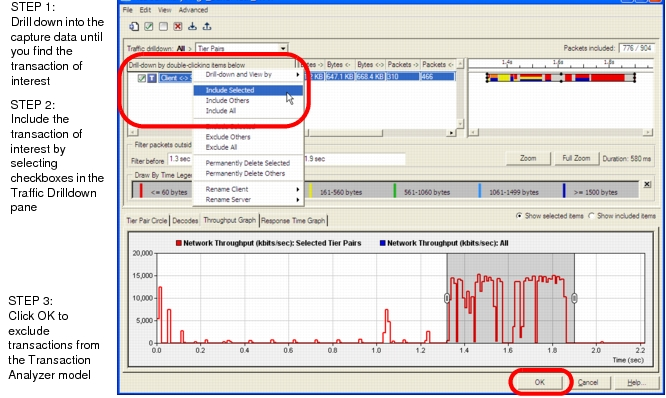

Trace Summary The Trace Summary window makes it easy to browse and flitter traffic within Transaction Analyzer. Use Trace Summary to: • View traffic in a Transaction Analyzer model • View detailed protocols (requires AppTransaction Xpert Decode Module license) • Filter irrelevant traffic and find user-level transactions of interest For more information, see the following sections: • Workflow descriptions — Trace Summary: Workflow Description — Example Workflow: Drilling Down, Searching, Extracting, and Importing • Task descriptions — Filtering Traffic — Finding a User-Level Transaction of Interest — Including Packets for a User-Level Transaction • User interface descriptions — Traffic Drilldown Pane — Packet Group Organization Trace Summary: Workflow Description The following steps outline the overall Trace Summary workflow: 1) From the Transaction Analysis window, open Trace Summary (Edit > Trace Summary…). 2) Navigate through the packets until you find a transaction of interest. 3) Mark all the packets that are relevant to that transaction as “Included”. 4) Click OK to include/exclude transactions from the Transaction Analyzer model. Figure 7-1 Trace Summary Window  The following procedure describes this workflow in detail. Procedure 7-1 Trace Summary: Exclude Transactions from a Transaction Analyzer Model 1 Open the Transaction Analyzer model. (File > Open Model > Transaction Analyzer…) 2 Choose Edit > Trace Summary. The Trace Summary window appears. 3 Use the Drilldown pane (upper-left) to navigate through the traffic and find the user-level transaction that you want to import. For more information, see: • Finding a User-Level Transaction of Interest • Visualization Panes in Trace Explorer/Trace Summary • Example Workflow: Drilling Down, Searching, Extracting, and Importing 4 Mark the packets for the transaction of interest as “Included”. Packets that are marked as Included are saved in the new file. All packets are initially excluded, as indicated by the “Packets included” field in the upper-right corner of the window. You can include/exclude groups of packets in the Traffic Drilldown pane; you can include/exclude individual packets in the Decodes tabbed page. For more information, see Including Packets for a User-Level Transaction. 5 Click Next. End of Procedure 7-1